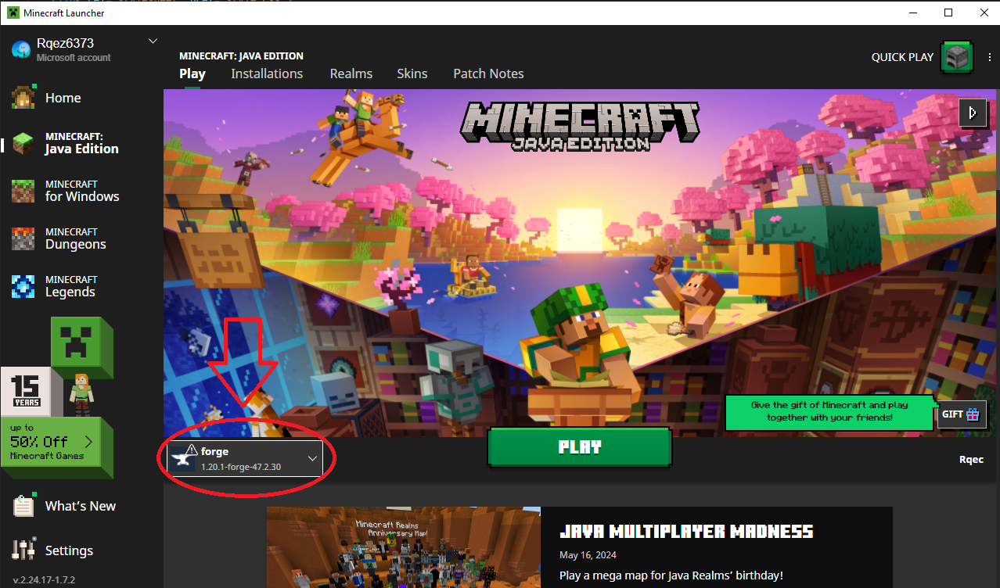
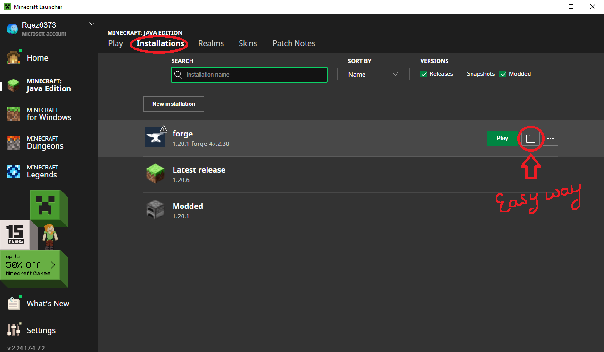
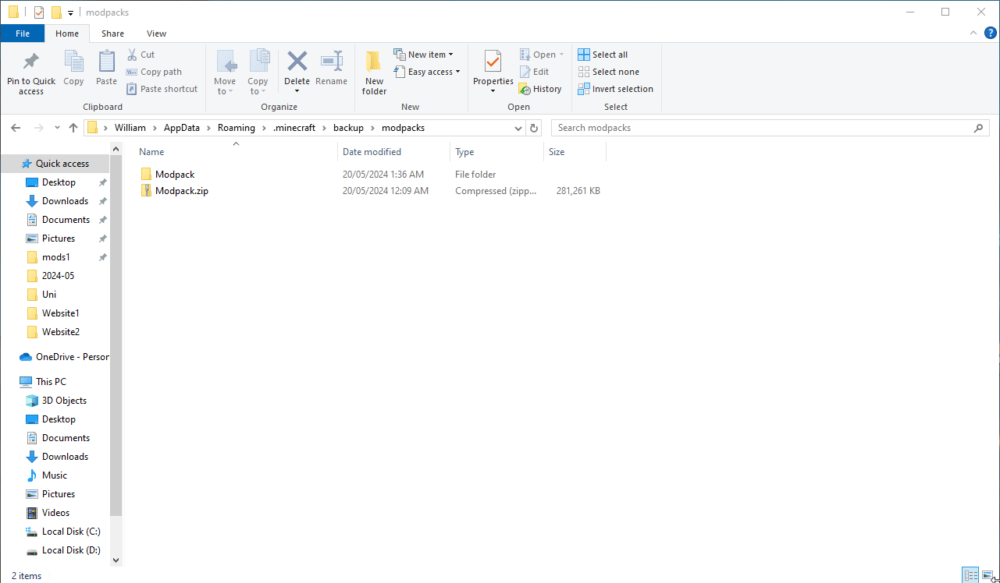
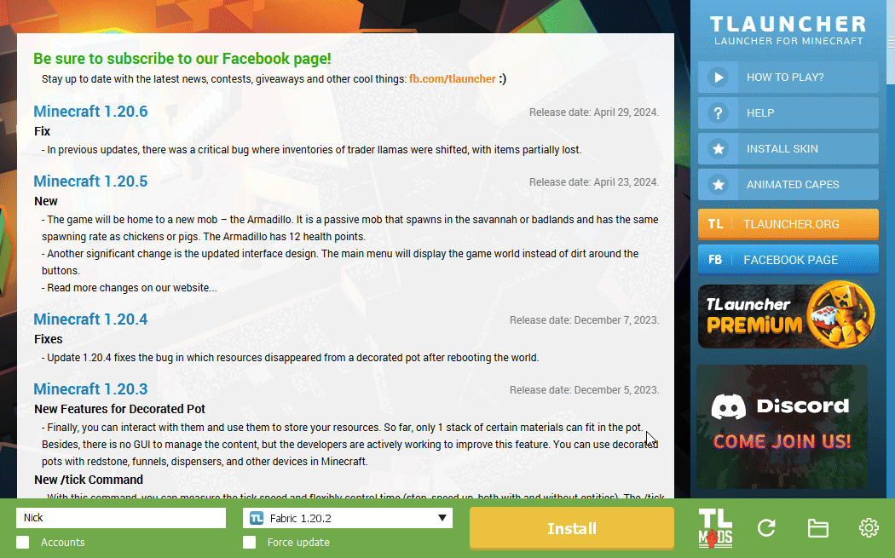

If you DO NOT have the official Minecraft client, SKIP until TLauncher.
First download Forge 1.20.1 snapshot 47.2.30 from here and install it.
Open your Minecraft Launcher and you should now have a forge profile as shown below.
Next, extract the Modpack.zip, and move all the files to your minecraft path:
C:/Users/Bob/AppData/Roaming/.minecraft
 Don't forget to give more Memory Allocation for your game as shown below!
It is recommended to spare 2-3GB of your total RAM for safety purposes.
And you're done! Head into Multiplayer and connect to the Server! Happy gaming.
First head to https://tlauncher.org/en/ and download the Minecraft client, it's free!
After installing the Minecraft client, download your Modpack, and restore the downloaded Modpack.zip file as shown below.
Once you are done restoring the modpack, go to the TLauncher settings and set a suitable Memory Allocation for your game.
It is recommended to spare 2-3GB of your total RAM for safety purposes.
And you're done! Head into Multiplayer and connect to the Server! Happy gaming.